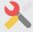

L'éducation comme levier de développement et de solidarité
SoDES acts pour offrir aux enfants et aux jeunes un accès équitable à l'éducation grâce à des actions concrètes et solidaires.

Présentation de SoDES
SoDES (Soutien au Développement par l'Éducation et la Solidarité) est une organisation engagée dans la promotion de l'éducation et de l'entraide.
Nous accompagnons les communautés à travers des initiatives éducatives durables et inclusives.
-
Soutien à l'éducation - scolarisation, fournitures, bourses
-
Développement communautaire - formations, autonomisation
-
Partenariats solide - ONG, institutions
Des résultats concrets sur le terrain
10,000+
Enfants touchés
150M+
Récoltés
10
Campagnes
04
Partenaires
Des projets à fort impact éducatif
Découvrez nos initiatives en cours et comment elles transforment des vies au quotidien.
Scolarisation des jeunes filles
Soutien à la scolarisation des filles issues de milieux défavorisés dans les zones rurales.

Formation professionnelle
Apprentissage de métiers et compétences pour les jeunes sans emploi des communes rurales.
Partage de Kits scolaires
Distribution de fournitures scolaires aux enfants les plus vulnérables avant chaque rentrée.
Ils témoignent de notre impact
Grâce à SoDES, ma fille a pu rester à l'école malgré nos difficultés. Aujourd'hui elle est en classe de 4ème. Je n'aurais jamais imaginé cela possible sans leur soutien.
Le programme de formation professionnelle a transformé notre village. Plusieurs jeunes ont maintenant leur propre activité et contribuent à l'économie locale.
Rejoignez le mouvement SoDES
Votre soutien, quel que soit sa forme, contribue directement à changer des vies. Faites un don, devenez bénévole ou partenaire.